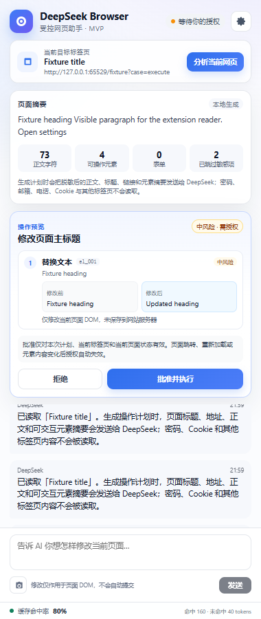
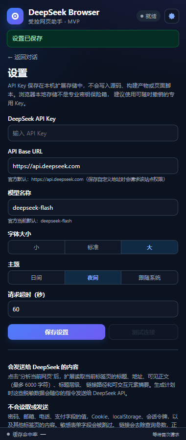

网页操作，
由你批准。
DeepSeek Browser Agent 是一个 Chrome 侧边栏网页助手：读取你选择的网页，生成结构化计划， 在本机完成风险检查，只有你确认后才执行允许列表内的修改。
A human-in-the-loop Chrome side-panel agent powered by the DeepSeek API. It reads only the active page you choose, proposes schema-validated actions, and requires explicit approval before any DOM change.


安全地让 AI 看懂网页
模型负责理解与规划；扩展负责权限、Schema 校验、执行和撤销。模型输出没有直接执行权限。
先预览，再执行
每次修改展示目标元素、修改前后内容、风险等级和预期结果，批准只对当前计划有效。
校验与撤销
执行后逐项检查实际 DOM；页面或目标内容变化时停止，可逆修改支持安全撤销。
敏感数据过滤
密码、邮箱、电话、支付字段不读取；正文 PII 先脱敏，链接查询参数被移除。
字号与主题
小/标准/大三档字号，以及日间、夜间和跟随系统主题，保存在本机设置中。
缓存命中率
底部实时展示 DeepSeek Prompt Cache 的会话命中率和命中/未命中 tokens。
截图框选
截取当前标签页、框选区域并附加到聊天；PNG 会随消息发送给视觉模型。
受控执行流程
从页面读取到修改验证，每一步都有本地边界。
安装 v0.2.0
Chrome 114+，Windows 10/11。使用 Release 中的 ZIP 或从源码构建。
使用 Release ZIP
- 从 最新 Release 下载 ZIP 并解压。
- 打开
chrome://extensions/，开启“开发者模式”。 - 点击“加载已解压的扩展程序”，选择解压后包含
manifest.json的目录。 - 点击扩展图标打开侧边栏，在设置中填写 DeepSeek API Key。
从源码构建
- 安装 Node.js 22/24 与 pnpm 11。
- 克隆仓库并安装依赖。
- 构建后加载
dist目录。
git clone https://github.com/Ptfoxa/deepseek-browser-agent.git cd deepseek-browser-agent pnpm install pnpm build
安全边界
网页、网页脚本生成的文字、模型输出和第三方响应都被视为不可信数据。
不执行模型代码
不使用 eval/new Function；不接受模型提供的 CSS 选择器、JavaScript、HTML 或任意 URL。
阻止高风险外部影响
提交、发送、发布、删除、购买、支付、登录等高风险动作不会被装成普通点击自动执行。
密钥隔离
API Key 仅由 Service Worker 使用，不进入 Content Script、日志、源码或构建产物。